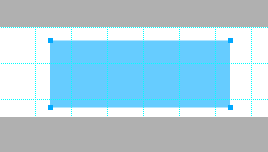
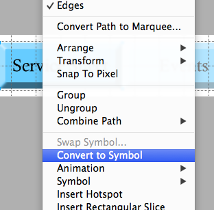
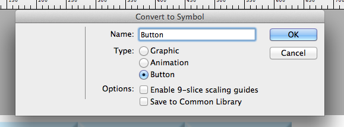
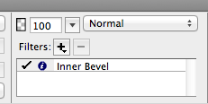

Two types of navigation that will allow us the access other subpages - Graphical and Text Navigation
Making Buttons in Fireworks
First, arrange the canvas size and make a box (Type the text you want).
Then, right click to convert to symbol
Name your button and make the type as button
Put the inner bevel filter to make it hover
Up= just the side bar ; Over= when you go over the sidebar


Then export as a HTML file

insert your FW buttons.html to dreamweaver

Then in the "link" part at the buttom menu drag it to where you are going to link

Repeat with every side bar that you made
Making Buttons in Dreamweaver
First make a box for the buttons

Then go to the code and write down the title for each buttons in bullet point

Just like this

Then add a new CSS Rule for it.Change the name for the new CSS rule of the buttons


Then add CSS rule definition- get rid of the bullet points of the burrons and arrange the place for the buttons


Final Look of Text Navigation